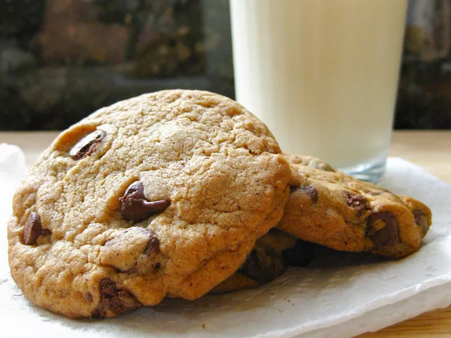

Cookie

- ½ cup unsalted butter
- 1 cup packed brown sugar
- 3 tablespoons white sugar
- 1 egg
- 2 teaspoons vanilla extract
- 1 ¾ cups all-purpose flour
- ½ teaspoon baking soda
- ½ teaspoon baking powder
- ½ teaspoon salt
- 1 ½ teaspoons instant espresso coffee powder
- 1 ½ cups semisweet chocolate chips
- Preheat the oven to 375 degrees F (190 degrees C) and grease a cookie sheet.
- Cream the butter and sugars until smooth, then mix in the egg and vanilla.
- Sift together the dry ingredients and combine with the wet ingredients.
- Stir in the chocolate chips.
- Drop dough onto the baking sheet, spacing the cookies apart.
- Bake for 8 to 10 minutes, or longer for crispier cookies.
- Let the cookies cool on wire racks.